19 EKİM · GERÇEK ARAÇ SINAMASI · RAE2822 CASE6
Kaynak geometriden CFD ve bağımsız deney kıyası
İnternetten alınan özgün koordinatlar → ayrı analiz ajanı → yeni bölgesel ağlar → native SU2 RANS → dondurulmuş tahmin → kaynak deney.
İkinci seri: dondurulmuş tahminin bağımsız sonucu
Asgari yeterlilik: geçmedi. Gerekli sayısal kapılar: tamamı geçmedi. Kritik bölgesel ağ açığı: var.
Aynı fiziksel koşullarda yakınsamış iki orta çözüm arasında, dörtgen normal katmanı0,01c’den0,02c’ye çıkarmak CL’yi%3,9766 ve CD’yi%4,6762 değiştirdi; yüzey Cp farkı RMSE0,034097. Üç ana seviyenin küçük farkı bu bölgesel duyarlılığı kapatmıyor.0,03c/0,04c katmanlar kesişme nedeniyle reddedildi.400c alanı hazırlanmış olsa da çözüm çalıştırılmadı.
Doğrulama tahmini olarak önceden tanımlı en ince ağ seçildi; en iyi deney uyumunu veren koşu seçilmedi. Kaba/orta/uzak alan ve başarısız tanıların bütün farkları saklanır. Aynı eşikler ve kaynak tabloyla belgeli tek işaret düzeltmesi kullanıldı.
- Orta→ince ağ: CL %0.2138; CD %1.4119; bütün alt kapılar geçti. Yakınsamış girişler: evet.
- Uzak alan: henüz değerlendirilemedi; gerekli alan eksik.
Alanı olmayan koşuya Cp/y+ atanmadı. Yakınsamamış ama kayıtlı bir alanın deney kıyası yalnız tanıdır; ağdan bağımsız sonuç sayılmaz. GCI/Richardson bandı raporlanmadı. V1–v2 toplam farkından eğri, dış alan ve akı yönteminin tek tek nedensel payı çıkarılamaz; tek değişkenli tanılar ayrı tutuldu.
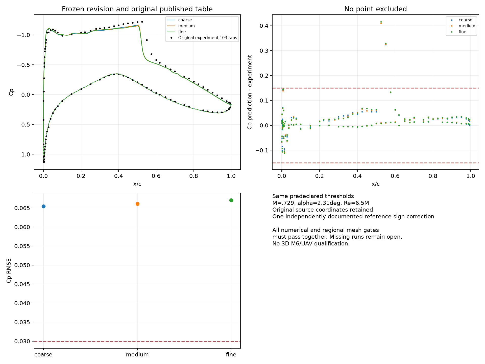
Dondurulmuş v2 alanları, özgün deney tablosu ve tüm103 noktada hata.V2 ham çıktı mühürü · Bağımsız v2 sayısal/deney kalite kaydı · Gerçek fiziksel koşul denetimi · Bağımsız dışa aktarılmış ağ topolojisi
Sınır tabakasının tamamı ayrıca incelendi
Ue, her çözümün kendi0,05–0,08c dış penceresindeki teğetsel hız medyanıdır;0,025–0,045c ikinci tanımın duyarlılığı da ham kayıtta korunur. δ99 bu operasyonel tanıma aittir; basınç gradyanı nedeniyle kesin bir deneysel kenar değildir. Dörtgen blok dışındaki üçgenler akışı çözebilir; gerçek normal hücre aralıkları ve çözüm duyarlılığı değerlendirilmeden kapsama uyarısı tek başına hata sayılmaz.
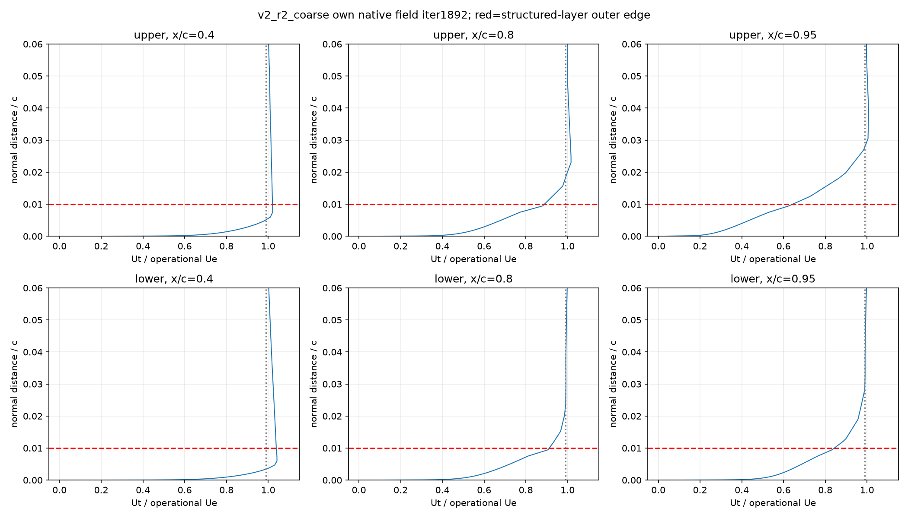
coarse: gerçek normal hız profilleri, tam alan adımı1892; kırmızı çizgi dörtgen katman sonu.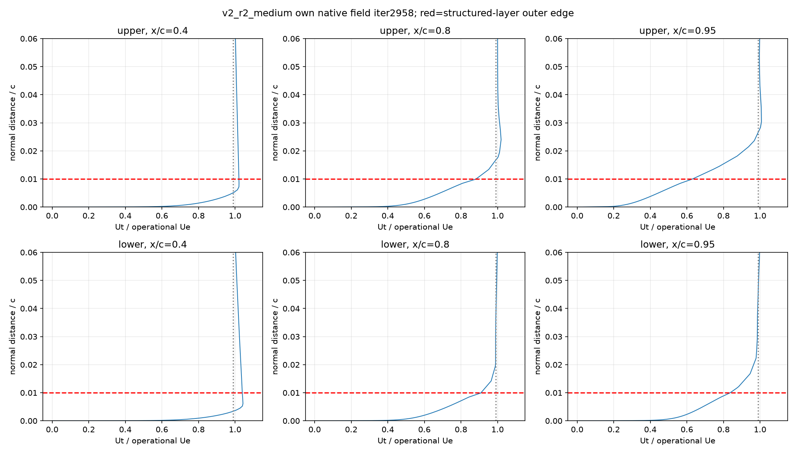
medium: gerçek normal hız profilleri, tam alan adımı2958; kırmızı çizgi dörtgen katman sonu.fine: gerçek normal hız profilleri, tam alan adımı3400; kırmızı çizgi dörtgen katman sonu.Tek değişkenli tanılar ve kalan sorun
Normal katman değişikliğinde iki çözüm de iteratif ve y+ kabulünü sağlıyor. Bu yüzden fark yalnız yakınsamamış bir çözümle açıklanamaz. Değişen kalınlık ağın bağlantısını da etkileyebilir; sonuç bu katman üretim düzenine duyarlılığı gösterir, tek başına bir hücrenin hatasını kanıtlamaz.
Sonradan dondurulmuş tanılar da özgün tabloyla kıyaslandı: eski eğri/40c üzerinde JST Cp RMSE0,05814, JST_MAT0,07088; yeni r2 eğri/200c üzerinde0,02c orta prototip0,05004. Hiçbiri0,03 sınırını geçmedi. Bunlar seçilmiş ana aileye sonradan yerleştirilmedi; tek bir daha iyi prototip üç ağ ve uzak alan kabulünün yerine geçmez.
İnce çözümün ilk denemesinde yoğunluk kalıntısı alt yüzey x/c≈0,745–0,75 mikrokatmanlarında yoğunlaştı. Aynı ağ/restart/akı altında sabit CFL1 devamıyla kayıtlı son3400 alanında sayısal kapılar geçti; terminal3468 satırı bu alanla karıştırılmadı.1300s süre sınırındaki son tam ara alan korunuyor.
Profil algoritması2, dış hız ve kenar aramasında yalnız geçerli VTK örneklerini kullanır. Eski algoritma ve geçersiz örnek konumları saklandı. Yeniden kontrol edilen profillerin sonucu değişmedi; ham CFD alanı ve kuvvetler değişmedi. Operasyonel δ99, özellikle alt arka bölümde Ue penceresine duyarlı olduğu için kesin fiziksel sınır tabakası kalınlığı diye sunulmaz.
Analizcinin dondurulmuş sayısal özeti · Aynı istasyonlarda normal profil farkları · Reddedilen ağlar ve nedenleri · Tüm tamamlanan tanıların ayrı deney kıyası · 649 dosyanın bağımsız SHA doğrulaması
Mevcut karar
Asgari yeterlilik henüz sağlanmadı.
İlk seri gerçek CFD üretti ve duvar y+ hedefini geçti. İnce ağın kuvvet kararlılığı, CL/CD ağ duyarlılığı, uzak alan etkisi ve deney farkı geçmedi. Kaynak aktarımında iki somut sorun bulundu: eğri birleştirmesinde yapay hücum kenarı köşesi ve NASA sayısal deney dosyasındaki tek bir işaret uyuşmazlığı. Bu sorunlar kanıtlandı; bütün başarısızlıkları açıkladıkları iddia edilmiyor.
İkinci seri ayrı geometri temsil sürümüyle donduruldu ve bağımsız değerlendirildi. Başarısız ve çalışılmamış koşular yukarıdaki ayrı sonuçta görünür. Gerçek İHA dosyaları ve önceki M6 kabul durumu değişmedi.
Analiz ajanına gerçekten ne verildi?
Özgün 65 noktayı içeren geometri, alt yüzeyin işaretini açıklayan kaynak yardımcı dosya, SI birimleri, Mach/Re/açı/sıcaklık, çözücü bilgisi ve sayısal kontroller verildi. Deney Cp/kuvvetleri veya beklenen şok konumu verilmedi. Ajan bölgesel ağı kendi ön çözümündeki gradyandan seçti. Geometriden akış koşulları tahmin edilmedi.
Koşullar çözümden önce NASA Study4'e göre M=0,729, α=2,31°, Re=6,5 milyon, T=255,5556 K olarak seçildi. Sıcaklık kaynağın hesaplama varsayımıdır. Kaynak normalleştirilmiş veter 1 m ile modellendi; Re ve boyutsuz referanslar korundu. Deneyin nominal M=0,725 / α=2,92° değerleriyle bu düzeltilmiş koşullar aynı şey değildir. Sonuca göre açı/basınç ayarı yapılmadı.
SA-noft2 tam türbülanslı, adyabatik kaymasız 2D RANS çözüldü. Özgün deneyin x/c=0,03 konumlu, 0,254 mm geçiş trip'i ayrıca saptandı; bu trip geometrisi/geçişi çözülmedi. Türbülans modeli ve bu fiziksel fark kabul sınırıdır.
İndirilen kaynak geometri · İlk tahminlerin SHA256 mühürü · Birim/işaret/geometri denetimi · Önceden kayıtlı kabul sözleşmesi
Ayrı sohbet geçmişi ve erişim kaydı kullanıldı. Aynı disk üzerindeki dosya kuralları güvenlik yalıtımı veya modelin eğitim belleğini temizleme değildir. İlk serinin sonunda analiz ajanı hesap kullanım sınırına takıldı; üretilmiş ham çıktıları ana ajan mekanik olarak dondurdu. Ajanın yazmadığı son kaydı onun yaptığı iddia edilmez. Ana ajan v1 kıyasından sonra deney sonuçlarını biliyordu; v2 analizciye yalnız kaynak geometri kusuru, geometri kontrol noktaları ve sayısal/fiziksel metadata aktarıldı. Bu, çift kör bir laboratuvar çalışması değildir. Güncellenmiş genel durum ve kullanıcı raporları v2 bitene kadar analizciye kapatıldı.
İlk serinin ölçümleri: v1
Tablodaki CL/CD, Cp ve y+ aynı kayıtlı alan iterasyonuna aittir. Süre aşımından sonraki terminal CSV satırı eski alanla birleştirilmedi. İlk iki çalışma normal bitti; ince ve uzak alan denemeleri süre aşımıyla durdu, son tam ara alanlar kullanıldı.
Özgün tablo düzeltmesinde de bütün 103 deney noktası korunmuştur. Hiçbir LE/şok noktası çıkarılmadı.
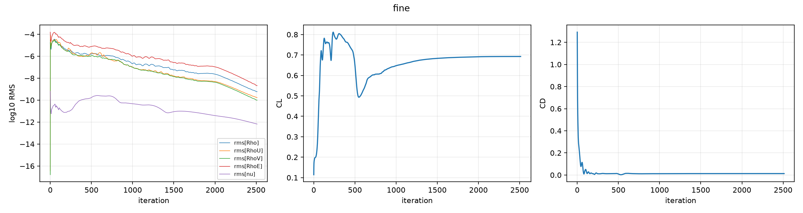
İnce ağın gerçek geçmişi; kuvvet aralığı da ayrıca sınanıyor.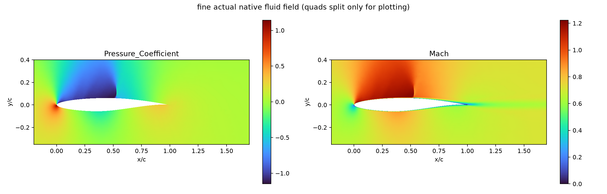
İnce ağın kayıtlı gerçek alanı; bu çizim yeni bir CFD çözümü değildir.Geçmeyen kapılar ve eşikler
Bu eşikler yerel sıkı yeterlilik sözleşmesidir; NASA'nın evrensel kabul standardı değildir. Deneyde belirtilen ±0,0026 ölçüm hatası modelleme belirsizliği değildir. İnce alanın iteratif kabulü eksik olduğundan bu farkları güvenilir GCI/Richardson hata bandına dönüştürmedik. 3D M6 veya İHA yeterliliği bu sonuçlardan çıkmaz.
Bütün kapılar ve bağımsız tarihçe denetimi · Değişmemiş NASA dosyasıyla kıyas
Ağ yalnız hücre sayısıyla yönetilmedi
Duvar normal katmanları, hücum/firar kenarı aralıkları, iz ve kendi ön çözümünden seçilen yüksek gradyan bölgesi ayrı tanımlandı. v1 gradyan kutusu x/c=0,44783–0,58783; y/c=−0,02–0,18. Kaynak deneyin şok yeri bu seçimde kullanılmadı. Dış akış alanı ve koşullar aynı üç seviye içinde sabit; 40c koşusu uzak alan duyarlılığıdır.
Normal yükseklik dışa aktarılmış duvar komşusu dörtgenlerden ölçüldü; TE üçgen fanına bu ölçüm atanmadı. Gerçek y+ bütün duvar noktalarında sınandı. Yüksek en-boy oranı tek başına kötü hücre kabul edilmedi. Pozitif alan/Jacobian, bağlantı ve sınır işaretleri ayrıca incelendi. En kötü çarpıklık/ortogonallik değerleri gizlenmedi; bunlar çözüm kabulünün yerine geçmez.
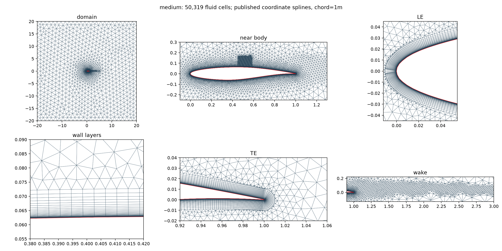
v1 orta ağ: gerçek yakın-cisim, LE, TE, duvar katmanı ve iz yakın görünümleri. Görseller tıklanarak büyütülebilir.İlk 0,02c katman kalınlığı ince ağda ağ üretim hatası verdi; reddedilen deneme/log korundu. Bütün nihai v1 ailesi 0,01c ile yeniden üretildi. Bu bir yeni fiziksel profil çizimi değildir; kaynak geometrinin akış alanı ağıdır.
Hücum kenarında bulunan temsil hatası ve v2 düzeltmesi
v1'de iki bağımsız eğri kaynak noktalarını yaklaşık makine hassasiyetinde geçiyordu; buna rağmen LE teğet sıçraması 21,24106° çıktı. Bu, nokta eşleşmesinin yeterli olmadığını gösteriyor. Kaynak noktalarını taşımadan, açık yay uzunluğu ve uç teğetleriyle yeni bir kübik B-spline temsili üretildi. LE teğet sıçraması 0°; firar kenarının ayrı teğetleri korundu.
Bağımsız NASA kaynağındaki 305 yüzey noktasına uzaklık en çok 3.8098939e-05 m, RMS 6.416381e-06 m. Bu noktalar eğriyi sonuçlara göre uydurmak için kullanılmadı. Yeni temsil ayrı r2 sürümüdür; v1 ve v2 ağlarını aynı geometrinin yakınsaması diye birleştirmiyoruz. İlk otomatik teğet ölçekleme adayı 1,00884c taşma yaptığı için reddedildi.
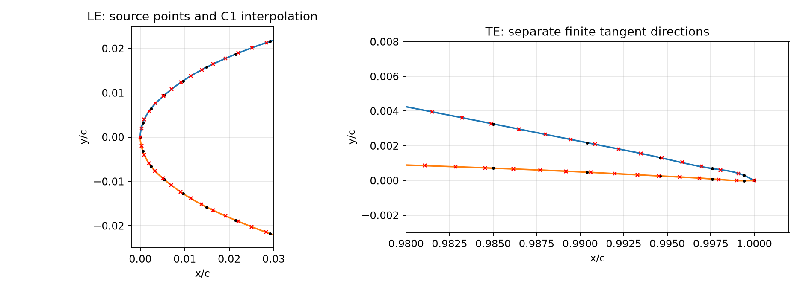
Yeni temsil kaynak noktalarını korur; LE sürekliliği ve TE uç biçimi ayrıca incelendi.Geometri revizyonu ve bütün uzaklıklar
İkinci seri için200c ana alan ve400c duyarlılık alanı hazırlandı; iç bölge korunup dış halka ayrı büyütüldü.400c çalışmasının yapılıp yapılmadığı ve gerekçesi yukarıdaki sonuçtadır. JST/JST_MAT ayrıklaştırma etkisi aynı eski ağ/restart üzerinde tek değişkenli tanı denemesiyle inceleniyor. Resmî SU2 belgesi JST'nin duvarı çözen ağlarda viskoz sürüklemeyi fazla verebildiğini açıklıyor; yöntem seçimi deney sonucuna bakılarak yapılmıyor. Bu değişikliklerin tek tek nedensel katkısı, birlikte değişen tam v2-v1 farkından çıkarılamaz.
Deney dosyasındaki işaret uyuşmazlığı nasıl çözüldü?
İlk kıyasta üst yüzey x/c=0,0002 noktasının hatası yaklaşık1 Cp çıktı. Noktayı atmak yerine özgün rapor indirildi. A6-17, Tablo6.7'de fiziksel Cp=+0,4219 yazıyor. NASA GENPLOT dosyası genel olarak −Cp sakladığı halde bu tek satırı +0,4219 olarak taşıyor; genel işaret dönüşümü bu satırı yanlış biçimde −0,4219 yapıyor. Özgün tabloya dayalı ayrı bir değerlendirme sürümünde yalnız bu noktanın işareti düzeltildi. İndirilen dosya, ilk puan ve tahminler değişmedi.
Bu kaynak düzeltmesiyle RMSE yaklaşık yarıya inse de önceden seçilen 0,03 sınırı geçilmiyor; şok/LE civarındaki diğer farklar korunuyor.
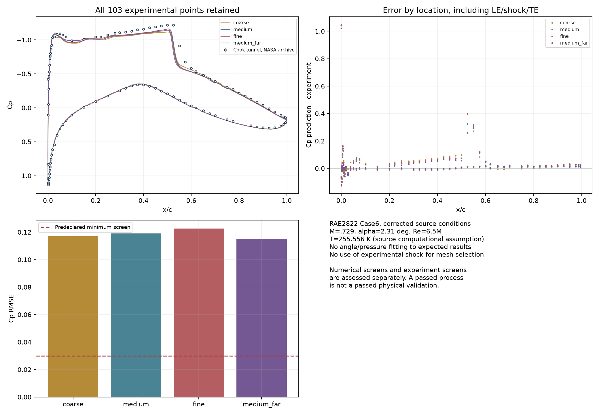
İndirilen dosyanın değiştirilmemiş ilk değerlendirmesi.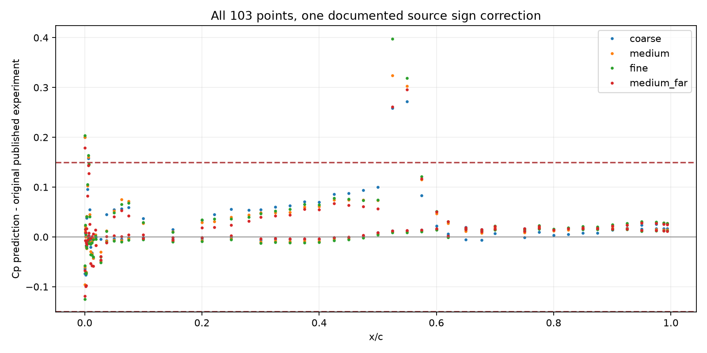
Özgün tabloyla kanıtlanan tek işaret düzeltmesi; bütün103 nokta korunur.Özgün tabloyu göster: PDF sayfa198, basılı A6-17
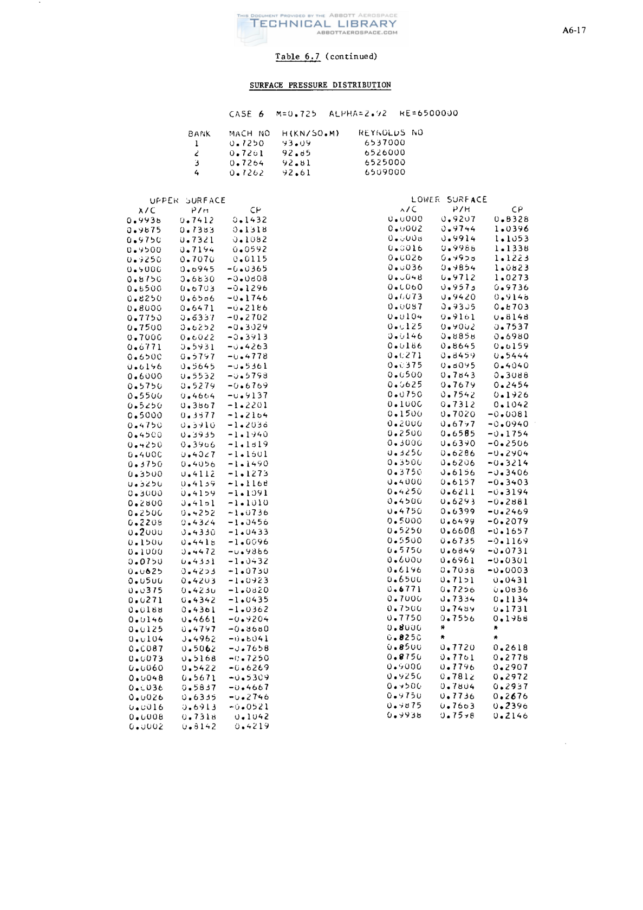
Cook et al. özgün Tablo6.7, üst yüzey son satır Cp=+0,4219.Eski/yeni değer, sayfa ve kaynak SHA256 denetimi · Nokta bazında bütün CSV farkları
Özgün deneyde kuvvet de bulundu; ayrı tanı olarak saklandı
Özgün A6-10/Tablo6.2'de CN=0,743, CD=0,0127 ve çeyrek veter Cm=−0,095 var. CN kanada dik katsayıdır, CL diye sunulmadı. Önceden seçilen düzeltilmiş koşullar ve tam türbülans yaklaşımı korunarak v1'in gövde-y katsayısı ve CD'si aşağıda tanı olarak veriliyor. Moment işaret sistemi henüz eşlenmediğinden Cm farkı hesaplanmadı. Bu sonradan bulunan kuvvetler için geriye dönük geçme eşiği oluşturulmadı.
| Koşu | Çözüm CN/gövde-y | Çözüm CD | CN bağıl farkı | CD bağıl farkı |
|---|
| coarse | 0.7023410 | 0.01509309 | %5.472 | %18.843 |
| medium | 0.6983650 | 0.01364997 | %6.007 | %7.480 |
| fine | 0.6925300 | 0.01300802 | %6.793 | %2.425 |
| medium_far | 0.7094686 | 0.01323115 | %4.513 | %4.182 |
NASA forces.lis dosyası hâlâ WIND'in sayısal kuvvet çıktısıdır; bu deney tablosuyla karıştırılmaz.
Özgün koşul/kuvvet tablosunu göster
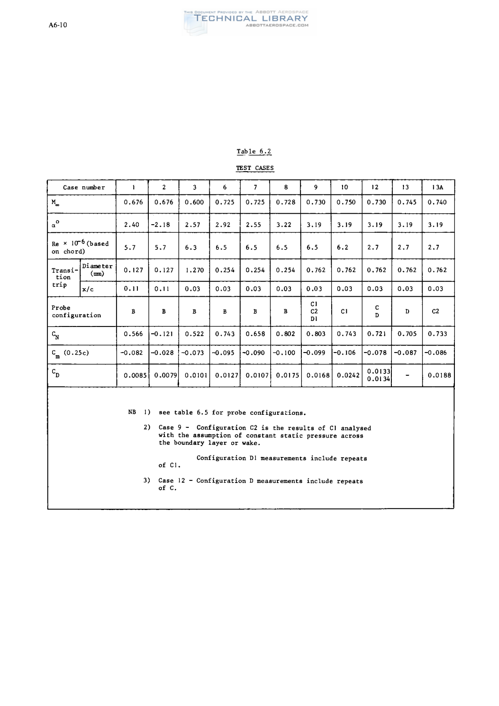
Tablo6.2: Case6 nominal koşullar, trip ve deney kuvvetleri.Kuvvet tanı kaydı
Önceki M6 başarısızlığında ek gerçek deneme
Aynı ince M6 kaynağı/restart ve fiziksel koşullarla, değişken CFL kapatılarak sabit CFL4 altında1000 ek adım çalıştırıldı: 518.7s. Son100 kuvvet aralıkları sakinleşti; yoğunluk kalıntısı -5.4859, max y+ 1.4645,271 noktada Cp RMSE 0.15439. Kalite yine geçmedi. Kuvvet geçmişinin sakinleşmesi deney doğrulamasını tek başına çözmedi. Önceki mühürlü raporlar değiştirilmedi.
Yeni M6 tanı sonucu · M6 çalışma girdisi
Bu aşama ne sağlıyor?
Kaynak geometriyle ayrı analiz, bölgesel duvar/LE/TE/iz/gradyan ağı, gerçek2D RANS alanı, ara kayıt, alan-iterasyon eşleştirmesi, bağımsız kuvvet integrasyonu, veri kaynağı denetimi ve eşikli rapor üretimi çalışıyor. Genel amaçlı güvenilir3D İHA CFD, stall/geçiş/kararlılık/yapı ve uçuşa uygunluk kabulü sağlanmış değildir. ANSYS kurulmadı; yeni ağır kurulum yapılmadı.
Gerçek ilk İHA'nın sekiz kavramsal adımı bu araç sınamasıyla tamamlanmaz. Bu çalışma gerçek İHA projesinden ayrı Kaynak geometriden kör CFD sınaması projesindedir; Mühendislik Merkezi'nde projeleri yenileyerek seçilebilir.
Sıradaki ölçülebilir adım: aynı kaynak r2 eğrisinde arka sınır tabakasını kapsayan, kesişmeyen bir ağ kurmak; bölgesel normal/teğetsel çözünürlüğü üç seviyede sınamak ve yalnız bu sayısal kapıdan sonra uzak alan denetimini tamamlamak. Eksik/başarısız kapı varsa asgari yeterlilik false kalır.